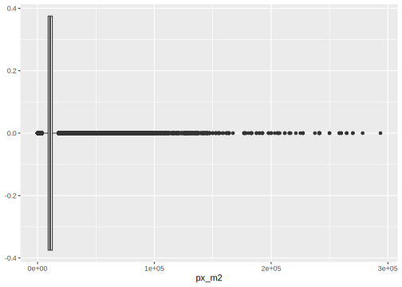
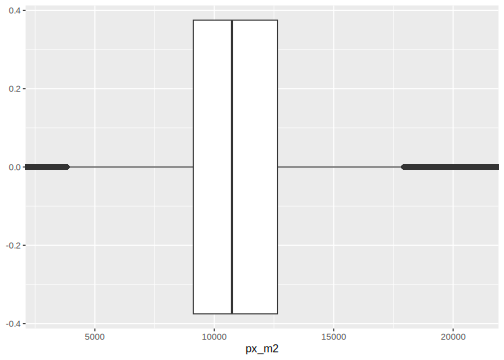
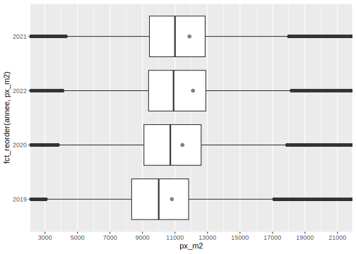
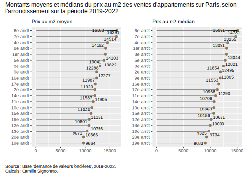

Section 8 Data Mining et Data Visualization en pratique
Reprenons la base de données sur les demandes de valeurs foncières sur laquelle nous avons travaillé dans la section 3, et commençons notre analyse descriptive des informations présentes dans cette base en construisant des graphiques pour répondre à certaines questions relatives aux prix auquels se sont vendus les appartements de la ville de Paris entre 2019 et 2022. On pourra ainsi étudier l’évolution dans le temps de ces prix.
# Appelons la table si elle n'est pas déjà dans votre environnement
dvf_Paris <- readRDS("data/dvf_Paris_1.Rdata")
# Rappel des variables présentes et de leurs noms
names(dvf_Paris) [1] "id_mutation" "date_mutation"
[3] "nature_mutation" "valeur_fonciere"
[5] "code_postal" "id_parcelle"
[7] "lot1_numero" "lot1_surface_carrez"
[9] "lot2_numero" "lot2_surface_carrez"
[11] "nombre_lots" "type_local"
[13] "surface_reelle_bati" "nombre_pieces_principales"
[15] "surface_terrain" "px_m2"
[17] "annee" "date_moisan" 8.1 Exemple de la construction d’un graphique pas à pas
On va chercher à représenter la distribution du prix du m2 des ventes d’appartements en fonction de l’année. Notre variable principale est donc px_m2, et la variable “secondaire” ou fonction de la première est annee.
Pour représenter la distribution d’une variable quantitative ou continue, on peut utiliser un histogramme (ou/et une courbe de densité), mais comme ici on veut la représenter selon une autre variable peut-être serait-il mieux d’utiliser une boîte à moustache qui donnera les principaux éléments de description de la distribution de cette variable.
Nous avons déjà vu ces deux graphiques précédemment, mais reprenons-les pour voir dans le détail comment nous les construisons !
D’abord, on va créer une boîte à moustache pour représenter la distribution de la variable px_m2:

Comme il reste des valeurs aberrantes (cf. section 3.2.3. de la séance 1 de ce cours), il faut faire un minimum d’élagage sur cette variable, ce qu’on n’avait pas fait à la fin de cette séance. On va ainsi supprimer les observations pour lesquelles le prix au m2 est supérieur au 1% de la distribution et inférieur au 99% de la distribution, mais en faisant attention à prendre la distribution selon l’année pour que cela soit plus précis. Voici comment faire :
# On peut d'abord regarder quelles sont ces valeurs avec la ligne de code suivante :
# dvf_Paris %>% group_by(annee) %>% mutate(p_1=quantile(px_m2, 0.01),
#p_99=quantile(px_m2, 0.99)) %>% select(annee, p_1, p_99) %>% unique()
# On crée 2 variables selon l'année et on filtre ensuite, attention à utiliser le
# "ungroup()" à la fin, en particulier parce qu'on remplace la base.
dvf_Paris_1 <- dvf_Paris %>%
group_by(annee) %>%
mutate(p_1=quantile(px_m2, 0.01), p_99=quantile(px_m2, 0.99)) %>%
filter(px_m2>p_1 & px_m2<p_99) %>%
ungroup()
# Vérifions les statistiques maintenant :
dvf_Paris_1 %>% group_by(annee) %>% get_summary_stats(px_m2)# A tibble: 4 × 14
annee variable n min max median q1 q3 iqr mad mean
<chr> <fct> <dbl> <dbl> <dbl> <dbl> <dbl> <dbl> <dbl> <dbl> <dbl>
1 2019 px_m2 25231 25.6 141429. 10000 8300 11897. 3597. 2648. 11530.
2 2020 px_m2 36150 37.1 99000 10714. 9048. 12667. 3619. 2648. 11934.
3 2021 px_m2 47692 35.7 145344. 11000 9388. 12917. 3529. 2567. 12617.
4 2022 px_m2 36414 50 293651. 10912. 9338. 12963. 3625. 2607. 13089.
# ℹ 3 more variables: sd <dbl>, se <dbl>, ci <dbl>Cela semble plus propre, et on a supprimé 2 981 observations.
On va pouvoir maintenant créer nos graphiques.
Il y a toujours pas mal de valeurs aberrantes ce qui ne rend pas très lisible le graphique. Pour éviter de supprimer encore des observations, on va utiliser une option pour mettre une échelle moins grande en abcisse. Plusieurs manières de faire existent, mais l’une d’entre elles équivaut à supprimer les valeurs, alors qu’une autre permet de les garder et juste de ne pas les faire apparaître sur le graphique, cela peut-être important si ensuite nous voulons ajoutons des statistiques comme la moyenne sur le boxplot, comme nous allons le voir.
La première manière est d’utiliser l’argument scale_x_continuous() et l’option limits=c() pour indiquer les nouvelles valeurs de l’échelle, par exemple ici entre 3 000 et 21 000, mais un avertissement est alors donné : 13 652 lignes ont donc été supprimées (sur 145 487 initiales), si nous ajoutons ensuite la moyenne, elle sera calculée sans ces 13 652 observations, cela peut donc changer les indicateurs de moyenne, voire de médiane, ce n’est donc pas rigoureux.
Utilisons plutôt la seconde méthode maintenant, avec l’option xlim() à intégrer dans la fonction coord_cartesian() qui fait l’équivalent d’un zoom sur le graphique :
# 1ère méthode :
# dvf_Paris_1 %>% ggplot() + aes(x = px_m2) + geom_boxplot()
# + scale_x_continuous(limits = c(3000, 21000))
# 2nde méthode plus rigoureuse :
dvf_Paris_1 %>% ggplot() + aes(x = px_m2) + geom_boxplot() +
coord_cartesian(xlim=c(3000,21000))
Ensuite, nous souhaitons représenter la distribution de cette variable selon l’année) : nous allons pour cela ajouter dans l’aes() une variable y= qui doit, attention, être définie en factor, sinon les niveaux/modalités de la variable ne sont pas reconnu(e)s ; et nous allons en profiter pour préciser un peu l’échelle des abscisses (réduire le “pas” avec l’option breaks=seq()) :
dvf_Paris_1 %>% ggplot() + aes(x = px_m2, y=annee) + geom_boxplot() +
coord_cartesian(xlim=c(3000,21000)) +
scale_x_continuous(breaks=seq(3000,21000,2000))On voit une augmentation de la médiane entre 2019 et 2021 puis une très légère baisse ou quasi-stagnation en 2022.
Nous pouvons également ajouter la moyenne, puisqu’ici nous voyons de gauche à droite, le minimum, le 1er quartile, la médiane, le 3ème quartile, le maximum et les “outliers” (points aberrants selon les statistiques de la boxplot). Pour cela, il faut utiliser la “couche” statistique de ggplot() avec la fonction stat_summary() et les options fun = mean pour la moyenne, geom = point pour qu’elle soit représentée par un point, color="gray50" pour qu’elle se différencie des autres points et soit en gris, et éventuellement size=2 pour jouer sur la taille du point.
# Pour infos, les options de `geom =` dans `stat_summary()` sont par exemple :
# "point", "pointrange", "crossbar", "bar" (cell-ci à ne pas utiliser ici néanmoins !)
dvf_Paris_1 %>%
ggplot() + aes(x = px_m2, y=annee) +
geom_boxplot() +
stat_summary(fun=mean, geom="point", color="gray50", size=2) +
coord_cartesian(xlim=c(3000,21000)) +
scale_x_continuous(breaks=seq(3000,21000,2000))On observe ainsi des différences entre la moyenne et la médiane, puisqu’ici la moyenne ne cesse d’augmenter y compris entre 2021 et 2022 ; la moyenne est toujours supérieure à la médiane puisque tirée par des valeurs plus souvent très élevées que très faibles (plus de points au-delà du maximum que l’inverse).
On peut aussi vouloir enlever les outliers avec l’option outlier.shape de geom_boxplot() comme ceci : geom_boxplot(outlier.shape = NA).
On peut vouloir encore ordonner l’affichage des années par ordre décroissant de la médiane ou de la moyenne (ordre décroissant ici = valeur la plus élevée en haut du graphique). Nous pouvons, entre autres, utiliser pour cela la fonction fct_reorder() du package forcats déjà présenté dans la section 3.2 de ce cours (Séance 1) : nous pouvons alors directement l’intégrer dans l’aes de ggplot dans la variable en ordonnée y=fct_reorder(), il faut alors entre parenthèses mettre la variable utilisée en ordonnée, suivie de la variable par laquelle on ordonne (la même que celle utilisée dans x=). Utilisée dans un boxplot, cela ordonne par défaut selon la médiane ; si on veut que les régions soient ordonnées par la moyenne, il faut rajouter l’option .fun=mean dans la fonction fct_reorder(), cf. le code en-dessous.
dvf_Paris_1 %>%
ggplot() +
aes(x = px_m2, y=fct_reorder(annee, px_m2)) +
geom_boxplot() +
stat_summary(fun=mean, geom="point", color="gray50", size=2) +
coord_cartesian(xlim=c(3000,21000)) +
scale_x_continuous(breaks=seq(3000,21000,2000))
# dvf_Paris_1 %>%
# ggplot() +
# aes(x = px_m2, y=fct_reorder(annee, px_m2), .fun=mean) +
# geom_boxplot() +
# stat_summary(fun=mean, geom="point", color="gray50", size=2) +
# coord_cartesian(xlim=c(3000,21000)) +
# scale_x_continuous(breaks=seq(3000,21000,2000))Attention, comme ici notre seconde variable est l’année, cela n’est pas forcément pertinent de modifier l’ordre du graphique pour le mettre selon la moyenne car cela pourrait perturber la lecture du graphique. On va revenir sur le graphique précédent donc.
Nous arrivons à un graphique intéressant, il faut maintenant améliorer la description autour : noms des axes, titres, légende informative sous le graphique (avec notamment un avertissement sur les valeurs non affichées sur le graphique), éventuellement un peu de couleur (avec fill= non pas dans l’aes() mais dans la fonction geom_boxplot() pour qu’elle soit identique quel que soit le département), etc.
Cela se fait avec la fonction labs(), et ensuite la fonction theme().
Une petite astuce pour les titres pour qu’ils ne soient pas coupés sur le graphe : \n collé à un mot (sans espace) permet de mettre à la ligne à partir de ce mot !
dvf_Paris_1 %>%
ggplot() +
aes(x = px_m2, y=fct_reorder(annee, px_m2)) +
geom_boxplot(outlier.shape = NA, fill="khaki") +
stat_summary(fun=mean, geom="point", color="gray50", size=2) +
coord_cartesian(xlim=c(3000,21000)) +
scale_x_continuous(breaks=seq(3000,21000,2000)) +
labs(title="Distribution du prix au m2 des ventes d'appartements dans Paris sur la période 2019-2022",
x="Prix au m2", y="Année",
caption="Remarques : Les valeurs en-dessous de 3 000€ et au-dessus de 21 000€ au m2 ne sont pas affichées ; les points \nau-delà du minimum et maximum non plus ; les points en gris représentent la moyenne. \nSource : Base 'demande de valeurs foncières', 2019-2022. \nCalculs : Camille Signoretto.") +
theme(plot.caption = element_text(hjust=0),
plot.title = element_text(size=11.5),
axis.title.x = element_text(size=10),
axis.title.y = element_text(size=10))Voilà un premier graphique construit avec la grammaire de ggplot(). À vous maintenant de construire vous-mêmes les graphiques qui vous sont suggérés dans la section suivante !
8.2 D’autres exemples à travers des exercices
8.2.1 Distribution du prix au m2 pour les appartements parisiens, selon l’année
Construisez le même type de graphique mais cette fois à partir d’une densité de distribution selon de même l’année. N’hésitez pas à changer les options pour le mettre à votre goût !!
dvf_Paris_1 %>%
ggplot() +
aes(x = px_m2, fill=annee) +
geom_density(alpha = 0.4, color=NA) +
coord_cartesian(xlim=c(3000,21000)) +
labs(title="Distribution du prix au m2 des ventes d'appartements dans Paris sur la période 2019-2022",
x="Prix au m2", y=" ", fill= "Année",
caption="Remarques : Les valeurs en-dessous de 3 000€ et au-dessus de 21 000€ au m2 ne sont pas affichées. \nSource : Base 'demande de valeurs foncières', 2019-2022. \nCalculs : Camille Signoretto.") +
theme(plot.caption = element_text(hjust=0),
plot.title = element_text(size=12),
axis.title.x = element_text(size=10),
axis.title.y = element_text(size=10))8.2.2 Comparaison des montants moyen et médian du prix au m2, par arrondissement de Paris
Construisez maintenant un graphique mettant l’un en-dessous de l’autre deux graphes en bâtons représentant respectivement le prix au m2 moyen et le prix au m2 médian des ventes d’appartements par arrondissement.
Pour vous aider si besoin, réfléchissez par étapes :
- non obligatoire, mais il est bien de commencer par créer une variable avec les noms réduit des arrondissements et non le code postal ;
- créer un premier graphe que vous assignerez à un nouvel objet et qui représentera celui de la moyenne par arrondissement ;
- vous pouvez pour cela créer une nouvelle variable qui constituera la moyenne pour chaque département (un conseil : arrondir à l’unité) ;
- sélectionnez les variables qui seront utilisées dans le graphique et vérifier (ou corriger sinon) qu’il n’y ait pas des doublons (lignes identiques) car cela peut fausser le graphique ensuite ;
- construisez le graphique avec
ggplot()et la bonne fonctiongeom_***(), les données doivent être affichées par ordre décroissant ; - faîtes de même pour la médiane par arrondissement ;
- vous pouvez ensuite mettre ces graphiques côte à côté avec le package
patchwork(qu’il vous faudra probablement installer si c’est la première fois que vous l’utilisez), recherchez sur internet comment faire ensuite (c’est très simple !), puis ajoutez un titre et une légende générale avec la fonctionplot_annotation().
dvf_Paris_1 <- dvf_Paris_1 %>%
mutate(nom_arrdt=as.factor(case_when(code_postal==75001 ~ "1er arrdt",
code_postal==75002 ~ "2e arrdt",
code_postal==75003 ~ "3e arrdt",
code_postal==75004 ~ "4e arrdt",
code_postal==75005 ~ "5e arrdt",
code_postal==75006 ~ "6e arrdt",
code_postal==75007 ~ "7e arrdt",
code_postal==75008 ~ "8e arrdt",
code_postal==75009 ~ "9e arrdt",
code_postal==75010 ~ "10e arrdt",
code_postal==75011 ~ "11e arrdt",
code_postal==75012 ~ "12e arrdt",
code_postal==75013 ~ "13e arrdt",
code_postal==75014 ~ "14e arrdt",
code_postal==75015 ~ "15e arrdt",
code_postal==75016 ~ "16e arrdt",
code_postal==75017 ~ "17e arrdt",
code_postal==75018 ~ "18e arrdt",
code_postal==75019 ~ "19e arrdt",
code_postal==75020 ~ "20e arrdt")))p1 <- dvf_Paris_1 %>% filter(!is.na(code_postal)) %>%
group_by(nom_arrdt) %>%
mutate(moy_prixm2 = round(mean(px_m2),0)) %>%
select(moy_prixm2, nom_arrdt) %>%
unique() %>%
ggplot() + aes(x = fct_reorder(nom_arrdt, desc(moy_prixm2)), y = moy_prixm2) +
geom_bar(stat="identity", fill="honeydew") +
geom_text(aes(label = moy_prixm2), position = position_stack(vjust = 0.5), color="gray25", size=2.8) +
labs(title = "Moyenne", x = " ", y = " ") +
theme(axis.text.x = element_text(angle=90, hjust=1, size=9),
plot.title = element_text(size=10.5))
p2 <- dvf_Paris_1 %>% filter(!is.na(code_postal)) %>%
group_by(nom_arrdt) %>%
mutate(median_prixm2 = round(median(px_m2),0)) %>%
select(median_prixm2, nom_arrdt) %>%
unique() %>%
ggplot() + aes(x = fct_reorder(nom_arrdt, desc(median_prixm2)), y = median_prixm2) +
geom_bar(stat="identity", fill="honeydew") +
geom_text(aes(label = median_prixm2), position = position_stack(vjust = 0.5), color="gray25", size=2.8) +
labs(title = "Médiane", x = " ", y = " ") +
theme(axis.text.x = element_text(angle=90, hjust=1, size=9),
plot.title = element_text(size=10.5))
library(patchwork)
(p1 / p2) +
plot_annotation(title = "Montants moyens et médians du prix au m2 des ventes d'appartements sur Paris, selon \nl'arrondissement sur la période 2019-2022",
caption = "Source : Base 'demande de valeurs foncières', 2019-2022. \nCalculs : Camille Signoretto.",
theme = theme(plot.title = element_text(size = 12),
plot.caption = element_text(hjust = 0)))On observe que les 4ème, 6ème, 7ème et 8ème arrondissements sont les plus chers, que ce soit en moyenne ou en médiane, même si le classement change légèrement selon les deux indicateurs.
Il faut vraiment se demander quel type de public serait visé par ces informations, si c’est le grand public, la moyenne et la médiane suffisent si l’on veut montrer qu’il y a quand même une certaine dispersion des valeurs selon les ventes, souvent seule la moyenne étant représentée.
geom_*** qui changent…
library("ggrepel")
p3 <- dvf_Paris_1 %>%
filter(!is.na(code_postal)) %>%
group_by(nom_arrdt) %>%
mutate(moy_prixm2 = round(mean(px_m2),0)) %>%
select(moy_prixm2, nom_arrdt) %>%
unique() %>%
ggplot() + aes(x = moy_prixm2,
y = fct_reorder(nom_arrdt, moy_prixm2)) +
geom_point(color="burlywood4", size=2) +
geom_segment(aes(x=0, xend=moy_prixm2,
y=fct_reorder(nom_arrdt, moy_prixm2),
yend=fct_reorder(nom_arrdt, moy_prixm2)),
color="snow4") +
geom_text_repel(aes(label = moy_prixm2), size = 3) +
labs(title = "Prix au m2 moyen", x = " ", y = " ") +
theme(plot.title = element_text(size=10),
axis.text.y = element_text(size=9))
p4 <- dvf_Paris_1 %>%
filter(!is.na(code_postal)) %>%
group_by(nom_arrdt) %>%
mutate(median_prixm2 = round(median(px_m2),0)) %>%
select(median_prixm2, nom_arrdt) %>%
unique() %>%
ggplot() + aes(x = median_prixm2,
y = fct_reorder(nom_arrdt, median_prixm2)) +
geom_point(color="burlywood4", size=2) +
geom_segment(aes(x=0, xend=median_prixm2,
y=fct_reorder(nom_arrdt, median_prixm2),
yend=fct_reorder(nom_arrdt, median_prixm2)),
color="snow4") +
geom_text_repel(aes(label = median_prixm2), size = 3) +
labs(title = "Prix au m2 médian", x = " ", y = " ") +
theme(plot.title = element_text(size=10),
axis.text.y = element_text(size=9))
(p3 + p4) +
plot_annotation(title = "Montants moyens et médians du prix au m2 des ventes d'appartements sur Paris, selon \nl'arrondissement sur la période 2019-2022",
caption = "Source : Base 'demande de valeurs foncières', 2019-2022. \nCalculs : Camille Signoretto.",
theme = theme(plot.title = element_text(size = 12),
plot.caption = element_text(hjust = 0)))8.2.3 Evolution du prix médian au m2 des ventes d’appartements à Paris
Changeons un peu de perspective et construisez cette fois un graphique montrant l’évolution du prix médian au m2 des ventes d’appartements à Paris, de manière générale et ensuite selon 6 arrondissements choisis selon leur prix médian mis en avant un peu plus haut : les 3 ayant les prix les plus élevés (6ème, 7ème et 4ème arrondissement), et les 3 ayant les prix les moins élevés (13ème, 19ème et 20ème arrdt).
On peut voir le rendre interactif de telle sorte que l’utilisateur puisse voir les valeurs des points en passant la souris dessus : pour cela, il faut installer et charge le package plotly puis utiliserla fonction ggplotly() ; cela nécessite de stocker le graphique dans un objet.
De même, il faut procéder par étapes :
- créer ensuite la variable de prix médian au m2 selon l’année ;
- ne garder que ces variables, supprimer les lignes doublons le cas échéant ;
- construir un graphique sous forme de courbes avec des points représentants les valeurs en le stockant dans un objet ;
- appeler la fonction
ggplotly()en utilisant l’argumenttooltip()pour que seule la valeur des “y” soit affichée..
g_evo <- dvf_Paris_1 %>%
group_by(annee) %>%
mutate(med_prixm2 = round(median(px_m2),0)) %>%
select(med_prixm2, annee) %>%
unique() %>%
ggplot() + aes(x=factor(annee), y=med_prixm2) + geom_point() + geom_line(group=1) +
scale_y_continuous(limits=c(6000,12000), breaks = seq(6000,12000,500)) +
labs(title = "Evolution du prix médian au m2 des appartements vendus à Paris",
x = " ", y = " ") +
theme(plot.title = element_text(size=12),
plot.caption = element_text(hjust=0))
#install.packages("plotly")
library(plotly)
ggplotly(g_evo, tooltip = c("med_prixm2")) %>%
layout(margin = list(l = 50, r = 50, b = 80, t = 50),
annotations = list(text = "Source : base 'demande de valeurs foncières', 2019-2022. \nCalculs : Camille Signoretto. \nNote : l'axe des ordonnées ne commence qu'à 6000€.",
showarrow = F, x = 0, y = -0.2,
xref='paper', yref='paper', xanchor='left', yanchor='auto',
xshift=0, yshift=0, font=list(size=10.5), align="left"))On retrouve un résultat que l’on avait observé précédemment avec la boxplot, à savoir que le prix médian au m2 des appartements vendus à Paris a augmenté entre 2019 et 2021, puis légèrement baissé.
Regardons maintenant selon quelques arrondissements de Paris (dans les 6 mentionnés au-dessus), pour étudier si cette évolution est différente selon la position de l’arrondissement dans l’échelle des prix médians.
g_evo_pls <- dvf_Paris_1 %>%
filter(nom_arrdt %in% c("4e arrdt","6e arrdt","7e arrdt","13e arrdt","19e arrdt","20e arrdt")) %>%
group_by(annee, nom_arrdt) %>%
mutate(med_prixm2 = round(median(px_m2),0)) %>%
select(med_prixm2, annee, nom_arrdt) %>%
unique() %>%
mutate(nom_arrdt=factor(nom_arrdt,
levels = c("6e arrdt", "7e arrdt", "4e arrdt","13e arrdt","20e arrdt","19e arrdt"))) %>%
ggplot() + aes(x=annee, y=med_prixm2, color=nom_arrdt) +
geom_line(aes(group=nom_arrdt), linewidth=1) +
scale_y_continuous(limits=c(6000,16000), breaks = seq(6000,16000,1000)) +
labs(title="Evolution du prix médian au m2 des appartements vendus à Paris, dans les 3 arrondissements \nayant les prix les plus élevés et les 3 arrondissements ayant les prix les moins élevés", x = " ", y = " ", color="Arrondissement") +
theme(plot.title = element_text(size=10.3),
legend.title = element_text(size=9),
plot.caption = element_text(hjust=0))
ggplotly(g_evo_pls, tooltip = c("med_prixm2")) %>%
layout(margin = list(l = 50, r = 50, b = 80, t = 50),
annotations = list(text = "Source : Base 'demande de valeurs foncières', 2019-2022. \nCalculs : Camille Signoretto. \nNote : l'axe des ordonnées ne commence qu'à 6000€",
showarrow = F, x = 0, y = -0.2,
xref='paper', yref='paper', xanchor='left', yanchor='auto',
xshift=0, yshift=0, font=list(size=10.3), align="left"))Pour tous les arrondissements, les prix médians au m2 sont à la hausse entre 2019 et 2020, mais connaissent ensuite parfois des stagnations, alors que d’autres continuent à augmenter (surtout pour le 6ème arronddisement), entre 2021 et 2022, deux arrondissements se démarquent - les 4ème et 7ème - car le prix médian continue à augmenter contrairement aux autres pour lesquels il diminue ou stagne.
8.2.4 Top 5 du prix au m2 des ventes d’appartements selon les arrondissements
Enfin, construisez un graphique en bâtons indiquant les seuls 5 premiers arrondissements ayant les prix moyens au m2 des ventes d’appartements les plus élevés, puis les prix médians, et les mettre côte à côte.
p5 <- dvf_Paris_1 %>%
filter(!is.na(code_postal)) %>%
group_by(nom_arrdt) %>%
summarise(moy_prixm2 = round(mean(px_m2))) %>%
arrange(desc(moy_prixm2)) %>% slice(1:5) %>%
ggplot() + aes(x = moy_prixm2, y = fct_reorder(nom_arrdt, moy_prixm2)) +
geom_bar(stat="identity", fill="darkgoldenrod1") +
geom_text(aes(label=moy_prixm2), position = position_stack(vjust=0.5), size=2.8) +
labs(title="Prix moyens",
x = "", y = " ") +
theme_classic() +
theme(legend.position = "none", plot.title=element_text(size=9),
axis.text.y = element_text(size=8),
axis.text.x = element_text(size=8),
axis.title.x = element_text(size=8))
p6 <- dvf_Paris_1 %>%
filter(!is.na(code_postal)) %>%
group_by(nom_arrdt) %>%
summarise(moy_prixm2 = round(mean(px_m2))) %>%
arrange(desc(moy_prixm2)) %>% slice(1:5) %>%
ggplot() + aes(x = moy_prixm2, y = fct_reorder(nom_arrdt, moy_prixm2)) +
geom_bar(stat="identity", fill="coral1") +
geom_text(aes(label=moy_prixm2), position = position_stack(vjust=0.5),
size=2.8) +
labs(title="Prix médians",
x = "", y = " ") +
theme_classic() +
theme(legend.position = "none", plot.title=element_text(size=9),
axis.text.y = element_text(size=8),
axis.text.x = element_text(size=8),
axis.title.x = element_text(size=8))
(p5 + p6) +
plot_annotation(title = "Top 5 des arrondissements ayant les prix au m2 des ventes d'appartements les plus élevés",
caption = "Source : Base 'demande de valeurs foncières', 2019-2022. \nCalculs : Camille Signoretto.",
theme = theme(plot.title = element_text(size = 12))) &
theme(plot.caption = element_text(hjust = 0))On retrouve les mêmes résultats.